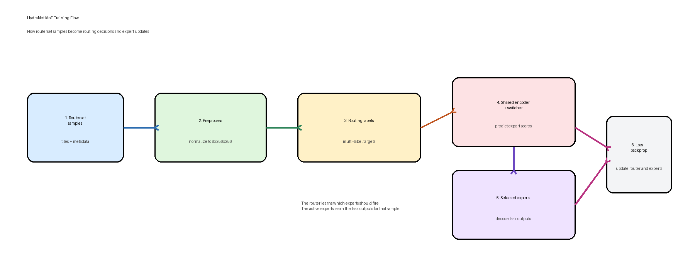

Quick Summary
The model has three main parts:
- A shared encoder reads the satellite image once and turns it into compact features.
- A routing switcher looks at those features and predicts which expert tasks are relevant.
- Task-specific expert decoders produce the final task outputs, such as fire or roads.
The expensive visual feature extraction is shared, while the task-specific behavior lives in separate experts.
Topology
The shared encoder extracts common features once, the switcher predicts expert scores, and the top experts decode the output.

How It Works
- The input is an 8-channel satellite image.
- The shared encoder extracts a common feature representation.
- The switcher predicts a score for each expert.
- The model keeps the top-k experts with the strongest routing scores.
- Those experts decode the shared features into task-specific outputs.
In practice, one sample can activate different experts depending on what the image contains.
Training Flow
Training uses routerset samples and multi-label routing targets so the switcher learns which expert heads should activate.

Data Preparation
- Routerset samples are normalized and tiled into the fixed
8x256x256shape. - Each sample gets a multi-label routing target saying which experts should activate.
Optimization
- The switcher predicts routing logits from the encoder bottleneck.
- A BCE loss compares predicted expert activations against the routing target.
- The current setup trains the switcher while keeping the encoder and expert decoders frozen.
Why This Design Exists
- It avoids running a separate full model for every task.
- It keeps a shared visual backbone across tasks.
- It still allows task specialization through expert decoders.
- It makes routing explicit, so expert selection is inspectable.
Code Pointers
- Model assembly:
src/hydranet/models/moe_student.py - Training wrapper:
src/hydranet/moe_lightning.py - End-to-end training entrypoint:
scripts/full_train_moe.py - Train-only switcher entrypoint:
scripts/train_moe_switcher.py